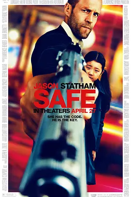

6.4
暂告安全
Safe
2012
美国
评分 6.4
导演:
鲍兹·亚金
演员:
杰森·斯坦森 / 凯瑟琳·陈 / 罗伯特·约翰·伯克 / 吴汉章 / 安松·蒙特
类型:
动作,惊悚,犯罪
剧情简介
纽约的地下世界从来不缺杀机与算计。这天傍晚，莱特站在地铁站台边，疲惫却警觉，像一只随时会反咬的孤狼。他原是名警察，却因坚持原则而被体制边缘化，活得比罪犯还落魄。就在他几乎对生活失去耐心时，一个被黑帮追逐的小女孩闯进了他的视线——她孤身一人、惊慌失措，却极力保持冷静。莱特在瞬间做出判断，毫不犹豫地迎向那些全副武装的暴徒。女孩名叫梅，年仅十二岁，却拥有过目不忘的天赋，被迫将一串极为重要的数字记在脑中。这串数字牵动着三合会、俄罗斯帮派、腐败警官与政客，每一方都想将她据为己有。随着追捕不断升级，纽约的街巷成为这对临时搭档的战场，从地铁到废弃仓库，从酒店的后梯到夜色下的唐人街，每一步都如走钢丝。梅在慌张中小心观察世界，而莱特则像久经沙场的护卫，既要对抗一波波杀手，也要时刻设法让她保持安全。他们在逃亡中逐渐建立起信任，彼此间的依靠比任何武器都更坚固。莱特发现，梅身上背负的秘密远比他想象的庞大，那串数字不仅是一把钥匙，更攥着众多势力的命脉。随着追兵逼近，莱特必须做出选择：继续逃亡，或反过来主动击破阴谋。他在城市深处来回穿梭，用最直接的方式应对每一股势力，让这场追逐从“保护”变成一场孤身反击。他不再只是救一个女孩，而是要将整个阴谋连根拔起。纽约的夜风吹过破旧的街区，黎明前的混乱中，莱特终于决定亲自把安全还给这个世界。